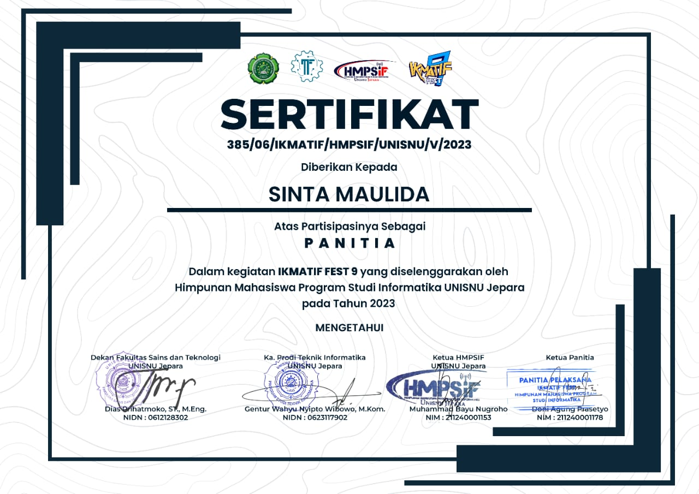

Sertifikat Penghargaan
Sertifikat atau pelatihan yang mendukung keterampilan dan pengetahuan yang relevan.
Nama lengkap : Sinta Maulida
Alamat : Banjaragung 07/04, Bangsri Jepara
Email : maulidasintaa01@gmail.com
Nomor telepon: 085866016870
Saya mahasiswa Teknik Infornatika Unisnu Jepara semester 3, dan aktif di organisasi Himpunan Mahasiswa Program Studi Informatika (HMPSIF).
Gelar : S.Kom
Institusi Pendidikan : Universitas Islam Nahdlatul Ulama Jepara
Perkiraan lulus : 2025
Keterampilan Teknis : Microsoft office.
Keterampilan Interpersonal: Public Speacking.
Pembuatan database dan Portofolio.
Saya merupakan mahasiswa aktif UNISNU jepara, dan mengambil jurusan Teknik Informatika, serta aktif di Kepengurusan Himpunan Mahasiswa Program Studi Informatika (HMPSIF) selama dua periode. periode 2022/2023 menjabat sebagai Anggota Divisi Eksternal, dan periode 2023/2024 sebagai Bendahara HMPSIF. Serta turut mengikuti kepanitiaan IKMATIF FEST yang merupaakan event Diesnatalis HMPSIF
Sertifikat kepengurusan organisasi Himpunan Mahasiswa Program Studi Informatika periode 2022/2023
Sertifikat kepanitiaan event IKMATIF FEST
Sertifikat atau pelatihan yang mendukung keterampilan dan pengetahuan yang relevan.
Bahas yang kuasai dan tingkat kemahiran : python, javascrip, php / pemula
Referensi dapat dicantumkan atau disebutkan tersedia atas permintaan : dari pemikiran sendiri.